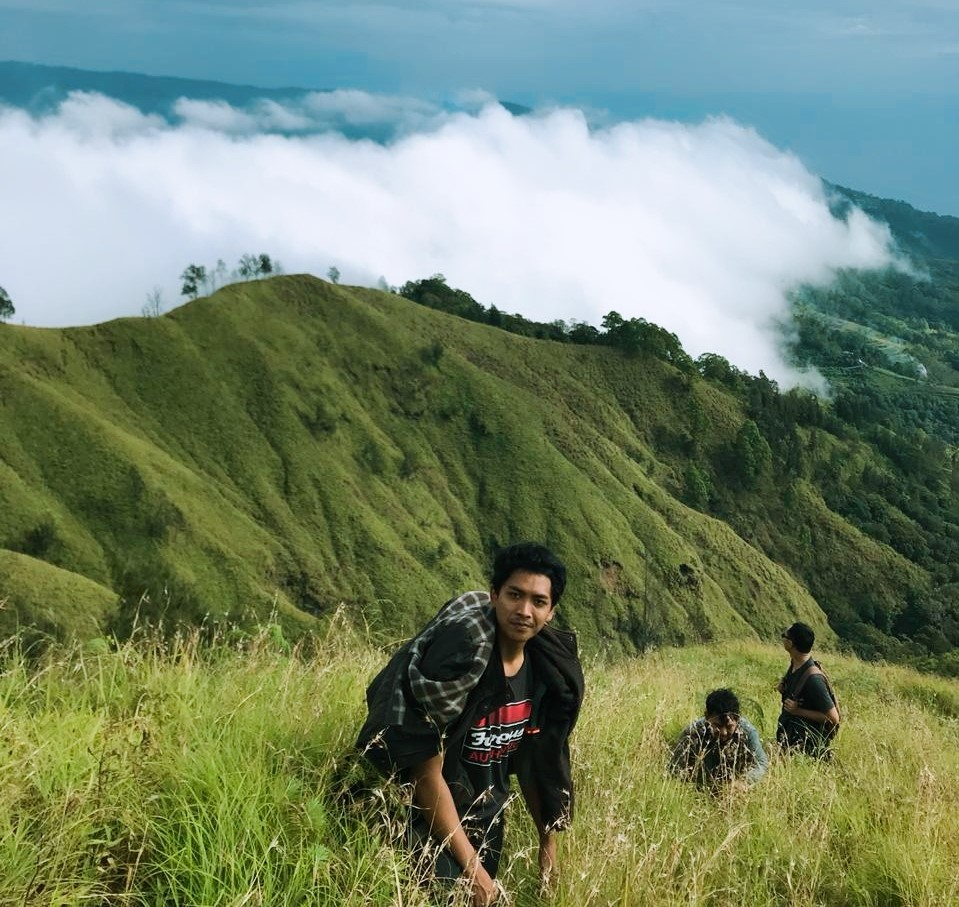

Gunung Batur merupakan salah satu gunung berapi yang masih aktif di Bali. Gunung Batur terletak di Kecamatan Kintamani, Kabupaten Bangli, Bali. Ketinggian Gunung Batur adalah 1.717 meter dari permukaan laut. Gunung Batur memiliki keindahan kaldera alami yang sudah diakui oleh Unesco pada tahun 2012 sebagai Kawasan Geopark.
Tidak sedikit photographer memilih area Gunung Batur sebagai lokasi foto pre-wedding karena keindahan kalderanya. Akses jalan menuju kaki gunung juga terbilang cukup mudah. Untuk pendakian, Gunung Agung dibuka untuk umum. Terdapat beberapa jalur untuk mendaki sampai ke puncak Gunung Batur. Salah satunya adalah jalur pendakian via Culali.
Pendakian jalur Culali menuju puncak kurang lebih 2-3 jam. Jalur Culali di dominasi oleh pasir dan jalurnya yang cukup landai. Sebaiknya pendaki berhati-hati jika melalui jalur Culali khususnya saat malam hari karena jalurnya yang masih baru. Jika pendaki ingin berkemah, jalur Culali adalah pilihan yang tepat karena terdapat area kemah yang sangat luas di lereng gunung sebelum puncak.
Pendakian Gunung Batur Jalur Umum
Pendakian Gunung Batur melalui jalur umum biasanya memakan waktu kurang lebih 2 jam untuk sampai ke puncak. Pendakian jalur umum dilengkapi berbagai fasilitas seperti parkir yang luas, terdapat toilet umum, serta pedagang lokal yang berjualan dari parkir bahkan ada pedagang yang berjualan di puncak gunung.
Jika melalui jalur ini, wajib membayar tiket masuk sebesar Rp. 15.000 untuk wisatawan lokal dan Rp. 30.000 untuk wisatawan mancanegara. Jalur ini di dominasi bebatuan serta terdapat tempat camp sebelum puncak gunung. Jalur pendakian ini sangat cocok untuk pendaki pemula khususnya orang yang baru pertama kali mendaki gunung.
Puncak Gunung Batur (Video)
Puncak Gunung Batur memliki berbagai view yang menakjubkan. Dari puncak gunung kita bisa melihat lautan awan, Danau Batur yang ada di lereng gunung, serta keindahan gunung di sekitar Gunung Batur. Pendaki juga bisa mengelilingi bibir kawah untuk melihat pemandangan dari segala sisi Gunung Batur.
Berendam di Air Panas Setelah Pendakian
Setelah melalui pendakian Gunung Batur yang cukup melelahkan, wisatawan dapat langsung berendam air panas alami di sekitar parkir pendakian Gunung Batur. Terdapat berbagai tempat untuk berendam dan lokasinya tidak jauh dari parkir pendakian kurang lebih sekitar 1-2 km.
Salah satu hot spring alami yaitu di Toya Devasya. Harga tiket pemandian Toya Devasya sekitar Rp. 50.000 sampai Rp. 100.000. Tempat ini cukup luas memiliki 8 kolam pemandian air panas dengan view yang menghadap ke Danau Batur.
Gunung Abang
(Ketinggian 2.152 Mdpl)
Gunung Abang merupakan gunung tertinggi ketiga di Bali setelah Gunung Agung & Gunung Batukaru. Gunung Abang berada di Desa Abangsongan, Kecamatan Kintamani, Kabupaten Bangli, Bali.
Tidak kalah indah dengan Gunung Batur, Gunung Abang memiliki view Danau Batur saat pendaki berada di camp ground di lereng gunung. Gunung Abang dikelilingi oleh pepohonan yang cukup lebat. Tiket masuk pendakian Gunung Abang sebesar Rp. 24.000.
Jalur pendakian melalui Desa Abangsongan cukup mudah untuk di akses. Pendakian membutuhkan waktu 3-4 jam untuk sampai ke Puncak Gunung Abang.
Gunung Batukaru
(Ketinggian 2.276 Mdpl)
Gunung Batukaru terletak di Desa Wongaya Gede, Kecamatan Penebel, Kabupaten Tabanan, Bali. Gunung Batukaru merupakan gunung tertinggi kedua di Bali setelah Gunung Agung. Gunung Batukaru adalah berapi yang sudah tidak aktif serta memiliki kawasan hutan yang sangat lebat.
Wisatawan yang ingin mendaki ke Gunung Batukaru kira-kira membutuhkan waktu 4-6 jam untuk sampai ke puncak. Sepanjang jalan pendakian akan melewati hutan belantara serta jalan setapak yang didominasi oleh akar pohon.
Sehingga pendaki sebaiknya berhati-hati apalagi saat musim hujan karena trek pendakian yang cukup licin. Apabila pendaki ingin berkemah, camp ground hanya tersedia di sekitar puncak yang tidak terlalu luas.
Sebaiknya pendakian dilakukan di pagi atau siang hari supaya meminimalisir kejadian yang tidak diinginkan. Masih banyak satwa liar yang ada di kawasan gunung, maka dari itu akan sangat berbahaya jika melakukan pendakian di malam hari.
Bukit Terunyan, Kintamani
(Ketinggian 1.834 Mdpl)
Bukit Terunyan terletak di Desa Terunyan, Kecamatan Kintamani, Kabupaten Bangli. Bukit Terunyan sebenarnya adalah pegunungan yang ada di sebelah Gunung Abang dan memiliki ketinggian dari Gunung Abang yaitu 1.834 Mdpl. Dari puncak, terlihat pemandangan Gunung Batur dan Danau Batur.
Pendakian melalui jalur Desa Terunyan bisa memakan waktu 3 sampai 4 jam untuk bisa sampai ke puncak. Di tengah pegunungan, terdapat camp ground yang dikelola oleh masyarakat lokal. Apabila ingin berkemah di Bukit Trunyan Camp, pendaki wajib membayar Rp. 40.000 per orang.
Jalur pendakian ke Bukit Terunyan tidak terlalu mudah, karena terdapat beberapa persimpangan jalan yang membuat pendaki bingung sehingga rawan tersesat. Sebaiknya menggunakan jasa guide bagi pendaki pemula.
View Pegunungan Kintamani

Menurut saya, pendakian ke Bukit Terunyan sangat worth it karena kita dimanjakan dengan view pemandangan pegunungan yang mengelilingi Danau Batur. Untuk bisa melihat lautan awan, sebaiknya melakukan pendakian di bulan Juli.
Selain melalui jalur Desa Terunyan, pendakian dapat melalui jalur lainnya yaitu melalui Desa Tianyar, Kabupaten Karangasem, Bali. Namun jalur dari Desa Tianyar cukup jarang digunakan.
Bukit Cemara Geseng, Buleleng
(Ketinggian 1.184 Mdpl)
Bukit Cemara Geseng berlokasi di Desa Silangjana, Kecamatan Buleleng, Kabupaten Buleleng, Bali. Pendakian dapat dilakukan melalui 3 Desa yang berbeda yaitu dari Desa Silangjana, Desa Sudaji dan Desa Lemukih.
Masing-masing jalur memakan waktu tempuh yang berbeda-beda untuk sampai ke puncak yaitu 2 sampai 4 jam perjalanan. Bukit ini memiliki ketinggian 1.184 Mdpl dimana terdapat Pura Bukit Cemara Geseng di puncak bukit.
Gunung Catur/Pucak Mangu
(Ketinggian 2.096 Mdpl)
Gunung Catur terletak di Desa Pelaga, Kecamatan Petang, Kabupaten Badung, Bali. Gunung Catur memiliki beberapa nama yang berbeda yaitu Pucak Mangu, Puncak Mangu, dan Gunung Mangu.
Gunung ini berada di ketinggian 2.096 Mdpl. Jalur pendakian cukup mudah dilakukan karena terdapat jalan setapak yang sudah di semen apabila melalui jalur pendakian Desa Pelaga. Gunung Catur memiliki hutan dan pepohonan yang cukup rapat dan termasuk hutan hujan tropis.
Gunung Ijen/Ijen Crater
(Ketinggian 2.769 Mdpl)
Gunung Ijen atau biasa disebut Kawah Ijen berada di perbatasan Kabupaten Bondowoso dan Kabupaten Banyuwangi, Jawa Timur. Gunung Ijen memiliki ketinggian 2.769 meter dari permukaan laut.
Untuk bisa mendaki ke Gunung Ijen, wisatawan lokal wajib membayar tiket masuk dan parkir kendaraan yang jika dijumlahkan tidak sampai Rp. 50.000. Jalur pendakian terbilang cukup mudah karena jalan setapak yang cukup lebar.
Pendakian membutuhkan waktu 2 sampai 3 jam untuk bisa sampai ke Kawah Ijen.
Melihat Kawah dan Blue Fire
Kawah ijen memberikan view yang berbeda dan sangat menakjubkan. Pendaki dapat mengelilingi bibir kawah serta melihat blue fire. Apabila ingin melihat blue fire, pengunjung sebaiknya berangkat lebih awal karena jika matahari sudah terbit, blue fire akan lebih susah dilihat.
Pendaki yang sudah sampai kawah ijen tidak disarankan untuk berlama-lama disekitar kawah karena gas yang keluar dari kawah yang cukup berbahaya dan bau belerang yang menyengat.
Gunung Agung
(Ketinggian 3.142 Mdpl)
Gunung Agung merupakan gunung yang tertinggi di Bali dengan ketinggian mencapai 3.142 meter dari permukaan laut. Gunung Agung terletak di Kecamatan Rendang, Kabupaten Karangasem, Bali.
Gunung Agung adalah tempat suci bagi orang Hindu Bali karena begitu banyak sejarah yang melekat pada Gunung Agung. DI kaki gunung terdapat Pura Besakih yang merupakan Mother of Temple.
Camp Ground di Pos 2
Pendakian menuju Puncak Gunung Agung dapat melalui jalur Pura Pengubengan. Terdapat 3 pos yang harus dilalui sebelum sampai ke puncak. Pendaki dapat berkemah di pos 2 namun camp ground di pos 2 tidak terlalu luas. Hanya bisa digunakan oleh 8 sampai 10 tenda.
Di pos 3 juga terdapat camp ground dengan kapasitas 2 sampai 3 tenda saja.
Puncak Tertinggi Bali, Puncak Sejati Gunung Agung
Terdapat beberapa jalur untuk bisa mendaki sampai ke kawah gunung yaitu melalui Pura Pengubengan, Pura Besakih dan Pura Pasar Agung. Saya merekomendasikan khususnya bagi pendaki pemula untuk memilih jalur Pura Pengubengan karena jalur yang cukup jelas tidak ada percabangan jalan sampai ke puncak.
Gunung Agung memiliki 3 puncak sebelum sampai ke puncak sejati atau kawah gunung. Biasanya angin kencang di sekitar puncak terjadi di bulan Oktober, November dan Desember. Sehingga sulit untuk mencapai puncak sejati.